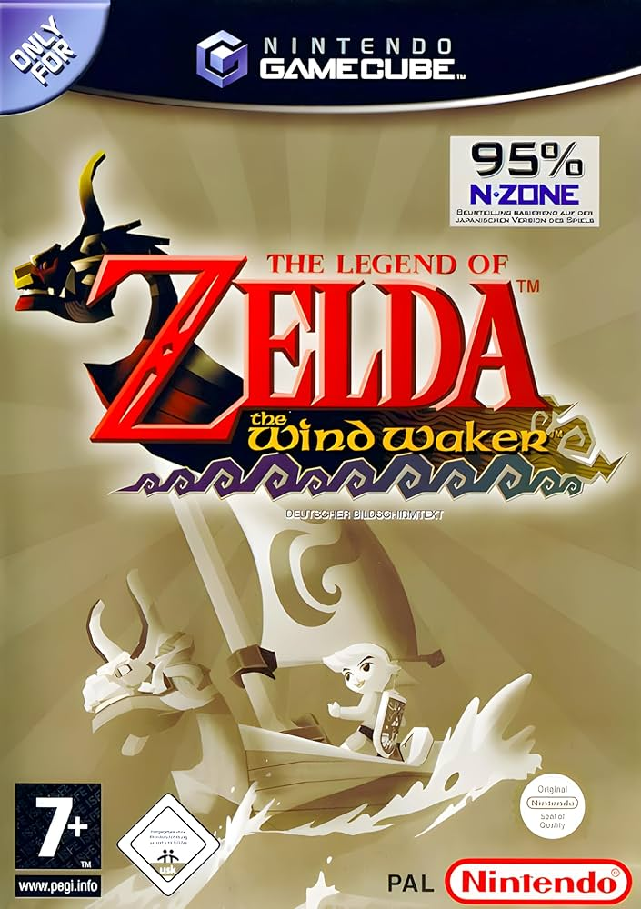

The Wind Waker überraschte mit Cel-Shading-Grafik und setzte den Fokus auf Seefahrt und Inselerkundung. Hinter der hellen Optik verbarg sich eine emotional tiefere Geschichte; das Segeln und die Inseln boten neue Erkundungsrhythmen für die Serie.
| Titel | The Legend of Zelda: The Wind Waker |
| Veröffentlichung | 13. Dezember 2002 (JP); März 2003 (NA) |
| Plattform | GameCube |
| Entwickler | Nintendo EAD |
| Produzent | Eiji Aonuma |
| Komponist | Kenta Nagata, Hajime Wakai, Toru Minegishi, Koji Kondo |
Inhaltlich bewegt sich Wind Waker auf See: die Oberwelt ist ein Archipel, und das Segeln ist Kernmechanik — Navigation, Windmanagement, Insel-Risiken. Die cel-shaded Grafik kaschiert komplexe Systeme: Schiffsupgrades, Schatzsuche, verknüpfte Insel-Quests. Dungeons sind thematisch stark, nutzen oft “wasserige” Mechaniken (Strömungen, Windrätsel, Plattformen), Bosskämpfe sind choreographiert und visuell einprägsam. Narrative Tiefe entsteht durch Charakterbeziehungen, verlorene Zivilisationen und melancholische Untertöne trotz freundlichem Look.